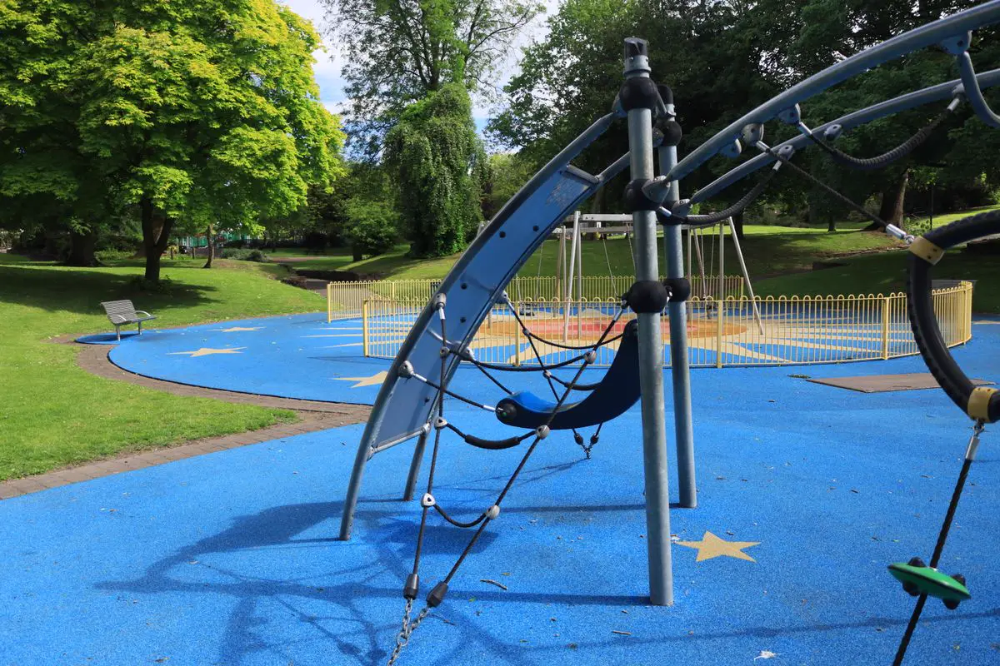

Piso emborrachado não é tudo igual
Dois pisos com a mesma cor podem ter desempenho completamente diferente. O que importa é quanto ele amortece a queda — e isso depende da espessura, da densidade e da composição da borracha. Um piso fino demais embaixo de um escorregador alto é só um revestimento colorido.
Por isso começamos pela pergunta certa: qual é a altura de queda do brinquedo mais alto, ou qual é o uso (playground, academia, rota acessível, área de convivência). A espessura e o tipo de piso saem dessa resposta, com base no ensaio de impacto do fabricante — e não do preço por metro quadrado.
Placa emborrachada ou piso moldado no local?
| Característica | Placas emborrachadas | Moldado no local (EPDM sobre SBR) |
|---|---|---|
| Acabamento | Juntas aparentes entre placas | Contínuo, sem emendas, com desenhos e cores |
| Amortecimento | Definido pela espessura da placa | Definido pela espessura da camada de base em SBR |
| Base necessária | Contrapiso nivelado e firme | Contrapiso nivelado, com caimento |
| Reparo | Troca da placa danificada | Remendo localizado com o mesmo composto |
| Áreas com curvas e desnível | Exige recortes | Acompanha curva, rampa e montículo |
| Uso mais comum | Playground de condomínio, academia | Playground de escola, praça, áreas temáticas |
Piso emborrachado para playground
A espessura acompanha a altura de queda do brinquedo e a área de queda inteira precisa estar coberta — não só o pé do escorregador. Seguimos a ABNT NBR 16071 e entregamos o piso com registro da espessura instalada, que é o que o laudo de playground vai conferir.
Piso emborrachado para academia
Na academia o objetivo é outro: absorver impacto de anilha e halter, reduzir ruído e vibração para o apartamento de baixo e dar aderência. Placas de alta densidade, com espessura maior na área de peso livre.
Área de lazer, pet place e rota acessível
Piso emborrachado é firme, antiderrapante e permite passagem de cadeira de rodas — por isso resolve a rota acessível até a área de lazer, item que aparece no laudo de acessibilidade NBR 9050.

Como instalamos
- Avaliação da base. Contrapiso com trinca, desnível ou sem caimento é corrigido antes — é a causa número um de piso que descola.
- Drenagem. Caimento para ralo ou borda drenante. Água parada embaixo do piso degrada a cola e cria bolha.
- Definição da espessura. Pela altura de queda (playground) ou pelo uso (academia, circulação).
- Assentamento. Placas coladas com adesivo de poliuretano ou piso moldado em camadas, com acabamento de bordas e rampa de transição.
- Entrega. Registro da área e espessura instaladas, orientação de limpeza e ART.
Problemas que mais aparecem em piso emborrachado antigo
| Problema | Causa provável |
|---|---|
| Placas soltando nas bordas | Base sem caimento ou cola inadequada para área externa |
| Desgaste no pé do escorregador e embaixo do balanço | Ponto de impacto concentrado — pede reforço ou troca localizada |
| Piso duro depois de alguns anos | Espessura insuficiente desde a instalação, ou borracha ressecada pelo sol |
| Poças e limo | Drenagem inexistente embaixo do piso |
| Degrau entre piso e calçada | Falta de rampa de transição — risco de tropeço e barreira para cadeira de rodas |
Perguntas frequentes sobre piso emborrachado
Qual a espessura do piso emborrachado para playground?
A espessura depende da altura de queda do brinquedo: quanto mais alto, mais espesso. O valor sai do ensaio de impacto do fabricante do piso para aquela altura. Por isso não existe espessura padrão — um piso que serve para gangorra pode ser insuficiente para um escorregador alto.
Piso emborrachado pode ser instalado sobre piso existente?
Pode, se a base estiver firme, nivelada e com caimento para drenagem. Cerâmica solta, contrapiso trincado ou área que empoça precisam ser corrigidos antes, senão o piso emborrachado descola.
Quanto custa o metro quadrado de piso emborrachado?
Varia com o tipo (placa ou moldado no local), a espessura, a metragem e o estado da base. Mande fotos e medidas da área e a altura do brinquedo mais alto: retornamos com o valor fechado, com ART.
Piso emborrachado esquenta no sol?
Esquenta, principalmente nas cores escuras. Em área sem sombra, cores claras e sombreamento ajudam. É um ponto que discutimos no projeto do playground.
Vocês trocam só as placas danificadas?
Sim, quando o modelo de placa ainda é compatível. Antes avaliamos se o problema é da placa ou da base — trocar placa sobre base com problema só adia o defeito.
Piso emborrachado na Grande Vitória
Instalação para playground, academia e área de lazer em condomínios, escolas e clubes:
Quer saber qual piso cabe no seu playground?
Mande a medida da área e a altura do brinquedo mais alto. Indicamos o tipo e a espessura.